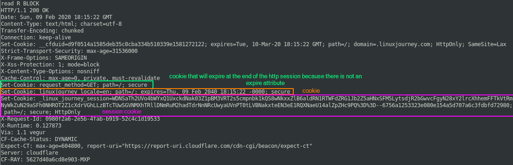
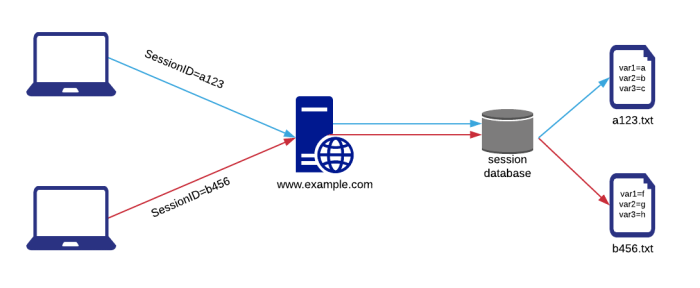

Session Cookies
example:
printf "GET / HTTP/1.1\r\nHost:linuxjourney.com\r\n\r\n" | openssl s_client -connect linuxjourney.com:443 -ign_eof
Session cookies have a
single parameter,
session ID that is referring to the session. A web developer can choose to use a
custom name for this Session ID.
At the subsequent request to the server the browser will insert in the header
the Session ID so that the client is recognized by the server.
With the session ID the server retrieves the
state of the client and its associated
session variables.
These
session variables are stored server side in
text files with the name of their session ID(e.g.: sessionID.txt)
So the main difference between cookies
and session cookies is that
cookies have parameters stored client
side whereas
session cookies have session variables stored server
side.
This storage of session variables on the server side is done to hide the application logic or
just to avoid the back and forth data transmission typical of cookies. session variables usually expire before then
cookies.
Alternatively to session cookies, session ID’s can also be carried through the GET method
appended to the requesting URL.

{kind=link}
{kind=link}